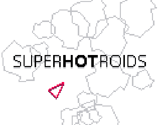
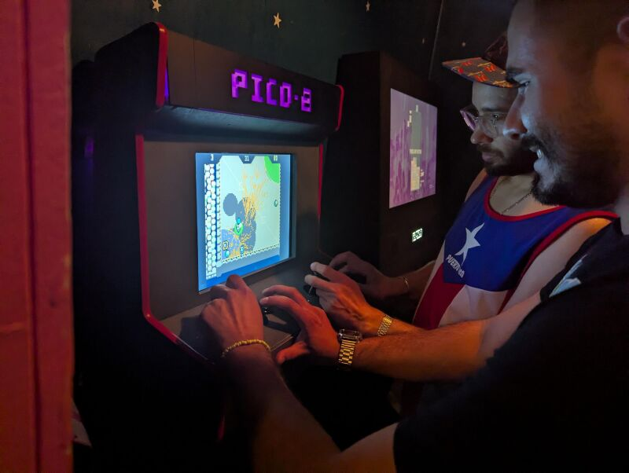

video games
I started taking part in game jams in 2023. Since then I've made more than a dozen games, all available on my itch.io page.
SUPERHOTROIDS

SUPERHOTROIDS is a version of Asteroids where time only moves when you do. It originated from a game jam Scotaire, PBeS Studio and I did with the theme "classic game with a twist".
BLASTODROME

BLASTODROME is two-player PICO-8 game where you throw bombs at each other.

It was selected by Wonderville for their Summer 2025 Residency during which it was playable on one of their arcade cabinet. (picture by Ram)
CHOOOOOMP

CHOOOOOMP is a solo scoring game where you play as a plant (?) which feeds on flies to grow. This game was primarily designed for smartphones, and uses the LÖVE game engine.
Marcel goes to visit a friend

Marcel goes to visit a friend is a short platformer made with PICO-8, and the first game I made that I would consider "finished".
Jam games
Most of my games start as game jam entries. These are made around a theme in a limited timeframe (generally 24 or 48 hours). They're somewhat buggy and lack polish, but they are always a good way to experiment with an idea and quickly spin a prototype. All these entries can be found here.